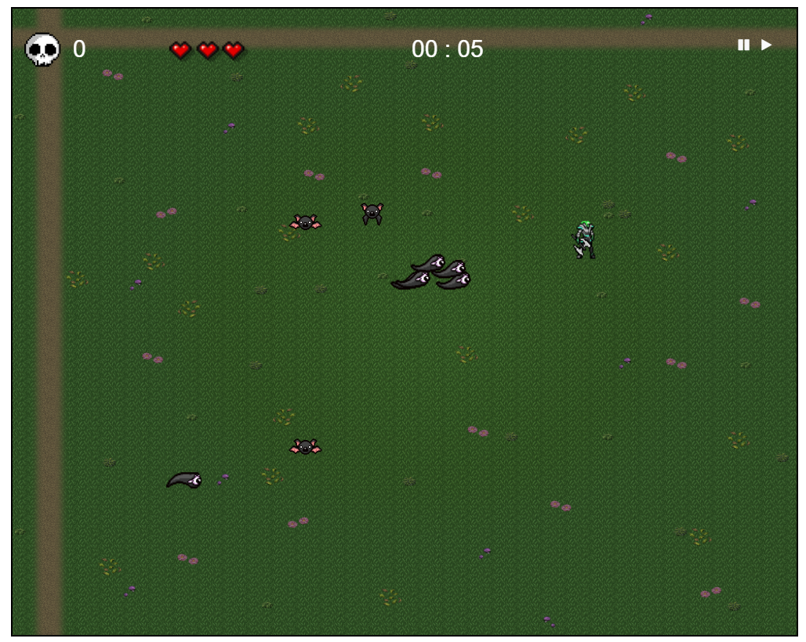
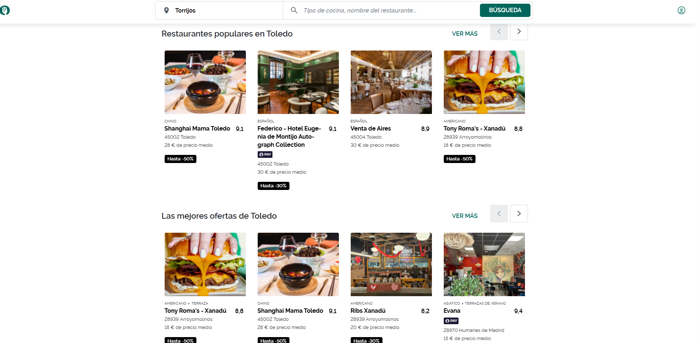
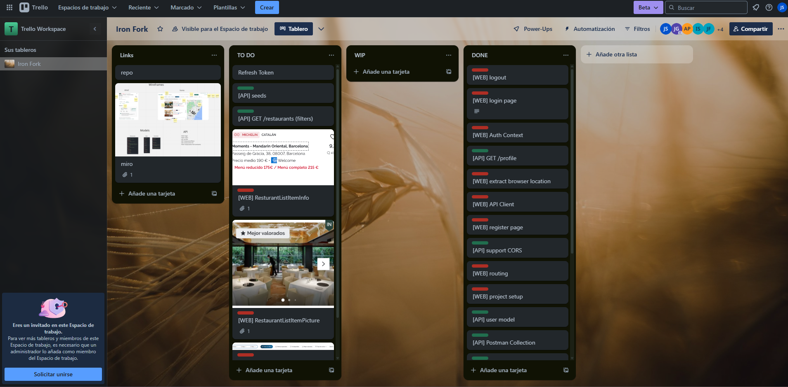

Juego de tipo roguelike basado en The Binding Of Isaac y Vampire Survivor
Tecnologias utilizadas:

App basada en The Fork
Tecnologias utilizadas:

Aplicación full-stack web MERN basada en Trello
Tecnologias utilizadas: